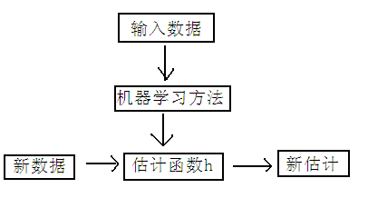
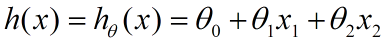
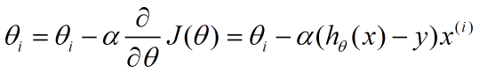

线性回归
在统计学中，线性回归(Linear Regression)是利用称为线性回归方程的最小平方函数对一个或多个自变量和因变量之间关系进行建模的一种回归分析。这种函数是一个或多个称为回归系数的模型参数的线性组合。只有一个自变量的情况称为简单回归,大于一个自变量情况的叫做多元回归。
线性回归求解方法
1.梯度下降法
下面是一个典型的机器学习的过程，首先给出一个输入数据，我们的算法会通过一系列的过程得到一个估计的函数，这个函数有能力对没有见过的新数据给出一个新的估计，也被称为构建一个模型。就如同上面的线性回归函数。

我们用X1，X2..Xn 去描述feature里面的分量，比如x1=房间的面积，x2=房间的朝向，等等，我们可以做出一个估计函数：

θ在这儿称为参数，在这儿的意思是调整feature中每个分量的影响力，就是到底是房屋的面积更重要还是房屋的地段更重要。为了如果我们令X0 = 1，就可以用向量的方式来表示了：

我们程序也需要一个机制去评估我们θ是否比较好，所以说需要对我们做出的h函数进行评估，一般这个函数称为损失函数（loss function）或者错误函数(error function)，描述h函数不好的程度，在下面，我们称这个函数为J函数
在这儿我们可以做出下面的一个错误函数：

这个错误估计函数是去对x(i)的估计值与真实值y(i)差的平方和作为错误估计函数，前面乘上的1/2是为了在求导的时候，这个系数就不见了。
如何调整θ以使得J(θ)取得最小值有很多方法，其中有最小二乘法(min square)，是一种完全是数学描述的方法，在stanford机器学习开放课最后的部分会推导最小二乘法的公式的来源，这个来很多的机器学习和数学书 上都可以找到，这里就不提最小二乘法，而谈谈梯度下降法。
梯度下降法是按下面的流程进行的：
1）首先对θ赋值，这个值可以是随机的，也可以让θ是一个全零的向量。
2）改变θ的值，使得J(θ)按梯度下降的方向进行减少。
为了更清楚，给出下面的图：

这是一个表示参数θ与误差函数J(θ)的关系图，红色的部分是表示J(θ)有着比较高的取值，我们需要的是，能够让J(θ)的值尽量的低。也就是深蓝色的部分。θ0，θ1表示θ向量的两个维度。
在上面提到梯度下降法的第一步是给θ给一个初值，假设随机给的初值是在图上的十字点。
然后我们将θ按照梯度下降的方向进行调整，就会使得J(θ)往更低的方向进行变化，如图所示，算法的结束将是在θ下降到无法继续下降为止。

下面我将用一个例子描述一下梯度减少的过程，对于我们的函数J(θ)求偏导J：（求导的过程如果不明白，可以温习一下微积分）

下面是更新的过程，也就是θi会向着梯度最小的方向进行减少。θi表示更新之前的值，-后面的部分表示按梯度方向减少的量，α表示步长，也就是每次按照梯度减少的方向变化多少。

一个很重要的地方值得注意的是，梯度是有方向的，对于一个向量θ，每一维分量θi都可以求出一个梯度的方向，我们就可以找到一个整体的方向，在变化的时候，我们就朝着下降最多的方向进行变化就可以达到一个最小点，不管它是局部的还是全局的。
2.最小二乘法
是一个直接的数学求解公式，不过它要求X是列满秩的，

X^TX，这两个矩阵相乘的结果，一个p*p的矩阵(p是解释变量的个数)，一定是可逆的吗？不可逆的话刚才算beta的公式不就没有意义了吗？
幸运的是，在实际生活中，只要我们的数据真的是随机抽取的，这个矩阵一般都是可逆的。 不幸的是，有一种存在叫做almost singular。 一个方阵(行数=列数, 比如上面那个p*p矩阵)一定可以被归类到以下两种情况：
-
singular: 行列式 X =0，特征根中至少有一个是0，不满秩，不可以求逆。 -
nonsingular: 行列式 X 不等于0，特征根都不等于0，满秩，可以求逆。
详见知乎回答： Linear least squares, Lasso,ridge regression有何本质区别？
利用SparkML求解
测试数据格式为libsvm(y 参数号:x)：
1 1:1
2 1:2
3 1:4
4 1:3
val linearTraining = ss.read.format("libsvm")
.load("/home/pi/doc/Spark/spark-2.0.0-bin-hadoop2.7/data/mllib/test_linear_regression_data.txt")
//ordinary least squares or linear least squares uses no regularization
val linearRegression = new LinearRegression()
.setMaxIter(100)
//正则化参数
//.setRegParam(0.5)
/**
* Param for the ElasticNet mixing parameter, in range [0, 1].
* For alpha = 0, the penalty is an L2 penalty. For alpha = 1, it is an L1 penalty.
* ridge regression uses L2 regularization; and Lasso uses L1 regularization.
*/
//.setElasticNetParam(0)
// Fit the model
val lrModel = linearRegression.fit(linearTraining)
// Print the coefficients and intercept for linear regression
println(s"Coefficients: ${lrModel.coefficients} Intercept: ${lrModel.intercept}")
// Summarize the model over the training set and print out some metrics
val trainingSummary = lrModel.summary
println(s"numIterations: ${trainingSummary.totalIterations}")
println(s"objectiveHistory: ${trainingSummary.objectiveHistory.toList}")
trainingSummary.residuals.show()
println(s"RMSE: ${trainingSummary.rootMeanSquaredError}")
println(s"r2: ${trainingSummary.r2}")测试结果：
Coefficients: [0.7999999999999996] Intercept: 0.500000000000001
numIterations: 1
objectiveHistory: List(0.0)
+——————–+
| residuals|
+——————–+
| -0.3000000000000007|
|-0.10000000000000009|
| -0.6999999999999993|
| 1.1000000000000005|
+——————–+
RMSE: 0.670820393249937
r2: 0.6399999999999999